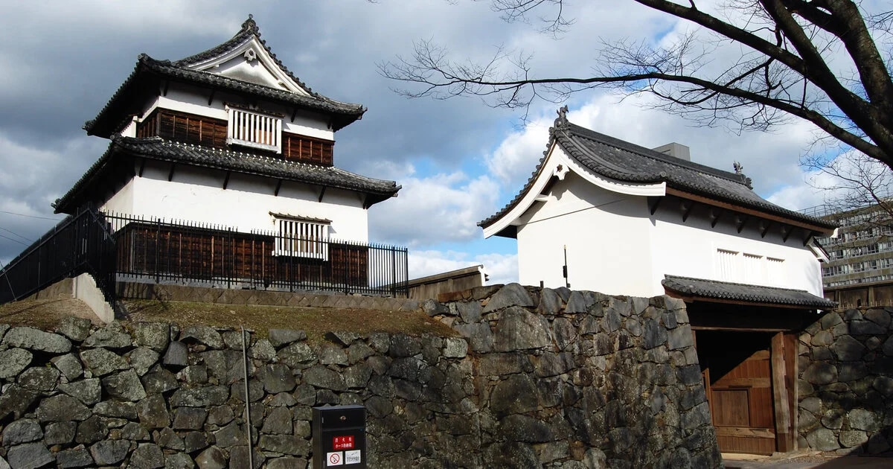

Замок Фукуока и парк Майдзуру
Среди деревьев сохранились каменные укрепления и башни замка Курода: по уступам холма читается устройство старой крепости.
🇯🇵 Показать местному
〒810-0043 福岡県福岡市中央区城内2-5 福岡城三の丸スクエア（園内の目印）
Что этоРуины замка рода Курода на территории парка Майдзуру.
ГлавноеКаменные стены, ворота и основание главной башни.
Не пропуститеВид на город с верхней площадки замковых укреплений.
- Тэнсюдай — каменное основание главной башни в верхней части замка.
- Тамон-ягура — длинную белую башню на южной стороне внутреннего замка.
- Рвы — вдоль северной границы парка, рядом с сохранившимися воротами.
- Для каменных лестниц и неровных дорожек наденьте устойчивую обувь.
- Осматривайте укрепления с открытых дорожек и площадок; на кладку не забирайтесь.
- Карта и адрес указывают на Санномару-сквер — ориентир на территории замкового парка.
История и подробности
В Майдзуру замок узнаётся по рельефу: дорожки поднимаются между каменными стенами, а открытые площадки отмечают прежние дворы. Здесь сохранились отдельные башни и ворота, но главный масштаб задаёт кладка. Наверху, у основания тэнсю, к старым линиям укреплений добавляется панорама современной Фукуоки.
Курода Нагамаса начал строительство в 1601 году после получения владений в Тикудзэне. Работы продолжались около семи лет. Название «Фукуока» выбрали в память о земле, связанной с родом Курода, в нынешней префектуре Окаяма. Замок стал резиденцией двенадцати поколений семьи.
После начала эпохи Мэйдзи большинство построек было утрачено. Уцелевшая Тамон-ягура помогает представить, как белые стены над каменным основанием соединяли оборону с повседневной службой гарнизона. Тэнсюдай стоит рассматривать как сохранившееся основание: нынешний вид не следует мысленно достраивать по аналогии с другими японскими замками. Парк объединил эти фрагменты с прогулочными дорожками и зелёными пространствами.
- 1601–1607 — строительство замка Фукуока.
- 1957 — руины получают статус национального исторического памятника.